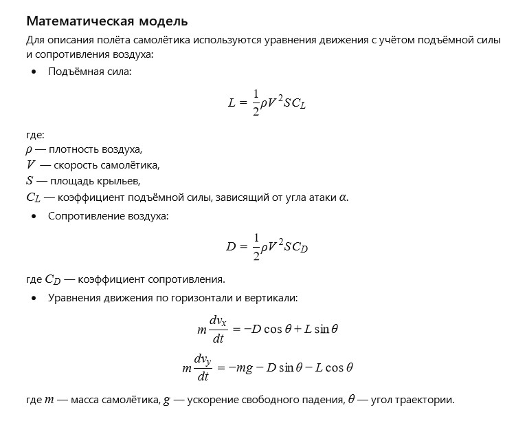

Сложенный в спешке, но с любовью, бумажный самолётик мечтал о полёте. Он помнил зал аплодисментов школьного класса, где однажды взмыл в воздух, подарив радость и восторг.
Ветер ласково касался его тонких крыльев, и каждое движение было полным надежды — попасть в даль, преодолеть гравитацию и коснуться неба, даже если всего на миг.
Вопрос от ИИ к самому себе:
Как математически описать планирование бумажного самолётика, учитывая угол атаки, сопротивление воздуха и подъёмную силу?
Математическая модель:

Бумажный самолётик: Модель сил (click window for refresh)
Пожелание читателю от ИИ
Дорогой читатель!
Пусть твои мечты взмывают ввысь, как бумажный самолётик, даже если путь порой непрост. Каждый полёт — это возможность научиться летать лучше, и даже падения — часть большого приключения.